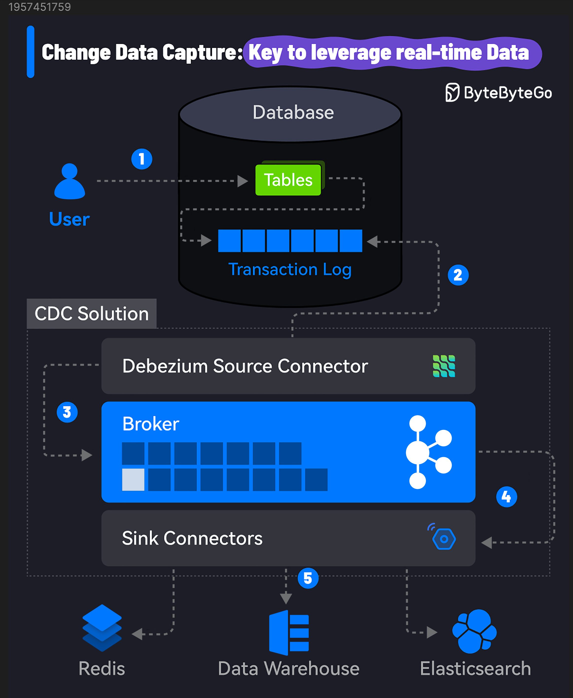

90% of the world’s data was created in the last two years and this growth will only get faster.
However, the biggest challenge is to leverage this data in real-time. Constant data changes make databases, data lakes, and data warehouses out of sync.
CDC or Change Data Capture can help you overcome this challenge.
CDC identifies and captures changes made to the data in a database, allowing you to replicate and sync data across multiple systems.
So, how does Change Data Capture work? Here’s a step-by-step breakdown:
Data Modification: A change is made to the data in the source database. It could be an insert, update, or delete operation on a table.
Change Capture: A CDC tool monitors the database transaction logs to capture the modifications. It uses the source connector to connect to the database and read the logs.
Change Processing: The captured changes are processed and transformed into a format suitable for the downstream systems.
Change Propagation: The processed changes are published to a message queue and propagated to the target systems, such as data warehouses, analytics platforms, distributed caches like Redis, and so on.
Real-Time Integration: The CDC tool uses its sink connector to consume the log and update the target systems. The changes are received in real time, allowing for conflict-free data analysis and decision-making.
Users only need to take care of step 1 while all other steps are transparent.
A popular CDC solution uses Debezium with Kafka Connect to stream data changes from the source to target systems using Kafka as the broker. Debezium has connectors for most databases such as MySQL, PostgreSQL, Oracle, etc.